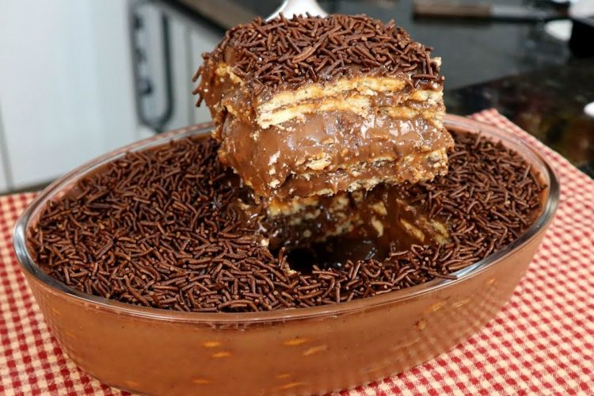

Pavê
Origem: Wikilidia, a enciclopédia livre.
Pavê (também conhecido como torta de bolacha) é um doce brasileiro de inspiração francesa e seu nome
deriva da palavra pavage (francês), que significa “pavimento", ou seja, uma montagem de pedras e
concreto que, por sua vez, lembra às camadas de creme e biscoitos ou pedaços de bolo que compõem a
sobremesa. Mais especificamente, é uma espécie de torta gelada que tem como base biscoitos do tipo
champanhe ou maizena inteiros ou uma massa de bolo suave embebidos em sucos, licores ou caldas e um
creme entre as camadas. Há também complementos variados: frutas frescas ou em calda e chocolate são os
mais comuns. É muito popular no Brasil, especialmente na época das festas de fim de ano.
Geralmente, as receitas envolvem aquecer o leite condensado e o leite e mexer a mistura até engrossar. Em
seguida, camadas de biscoitos de maisena são colocadas em um recipiente alternando com camadas da
mistura cremosa. Além disso, podem ser feitos pavês de diversos sabores, como chocolate, doce de leite,
amendoim, ou frutas como morango, abacaxi, limão e pêssego.
Apesar de ser visto como inspirado no doce italiano Tiramisù, o doce brasileiro é mais antigo que o
italiano, sendo o útlimo citado pela primeira vez em um livro de receitas na década de 60, enquanto o
brasileiro é citado já na década de 30.
Galeria de imagens
|  |
 |
Referência
- WikipédiA